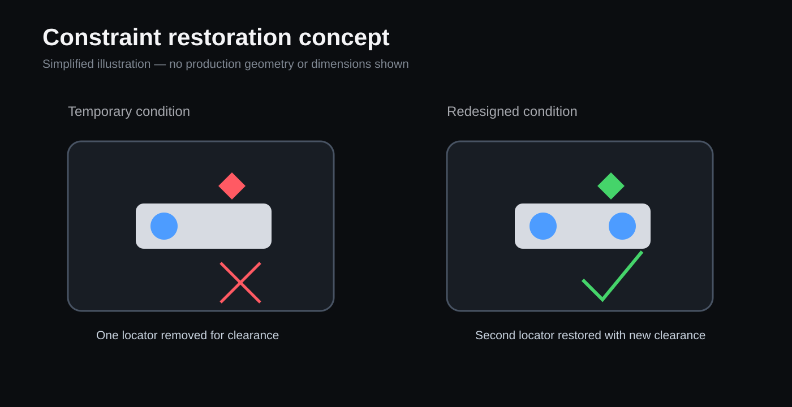

Problem
A feeder installation physically blocked a critical locating feature on a robotic end-of-arm tool. A temporary workaround kept the pick running, but the part no longer had complete translational constraint.
The design challenge was to restore complete part location without interfering with the feeder track, downstream placement, robot motion, or service access.

Engineering requirements
Constraint
- Restore full six-degree-of-freedom part location.
- Preserve existing rotational constraint.
- Control the remaining translation.
Integration
- Clear the feeder and downstream process.
- Avoid a major robot-program rewrite.
- Maintain technician access and serviceability.
Manufacturing
- Use standard modular components where practical.
- Limit custom parts.
- Release shop-ready drawings.
Design and manufacture
I measured the physical tool and workpiece, then created two locating-assembly variants covering three fixtures in CATIA V5. The solution combined standard NAAMS components with custom-machined 17-4 PH stainless-steel hardware and a revised upper locating jaw.
- Used physical measurements to reconcile the actual build with the digital assembly.
- Selected standard components for adjustability and replacement while keeping custom geometry limited to the interfaces that required it.
- Completed design-for-manufacturing reviews and released drawings for internal machining and finishing.
- Supported assembly and physically installed the finished hardware on the production line.
Validation and production result
The installed tooling completed a 25-part live-line validation with no issues. The team continued monitoring it with maintenance for the following week; the assembly remained stable and the related pick-fault trend decreased in production fault logs.
The project closed the full engineering loop: field problem, kinematic analysis, CAD, component selection, drawings, machining, finishing, assembly, installation, validation, and production monitoring.
Related clamp improvement
During the same investigation, I identified a separate clamp face that interfered with weld beads and contributed to part misalignment. I added a clearance chamfer, released the change for machining, and supported installation. The modified clamp entered production and substantially reduced the recurring fault.